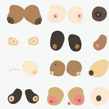
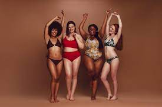
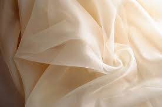
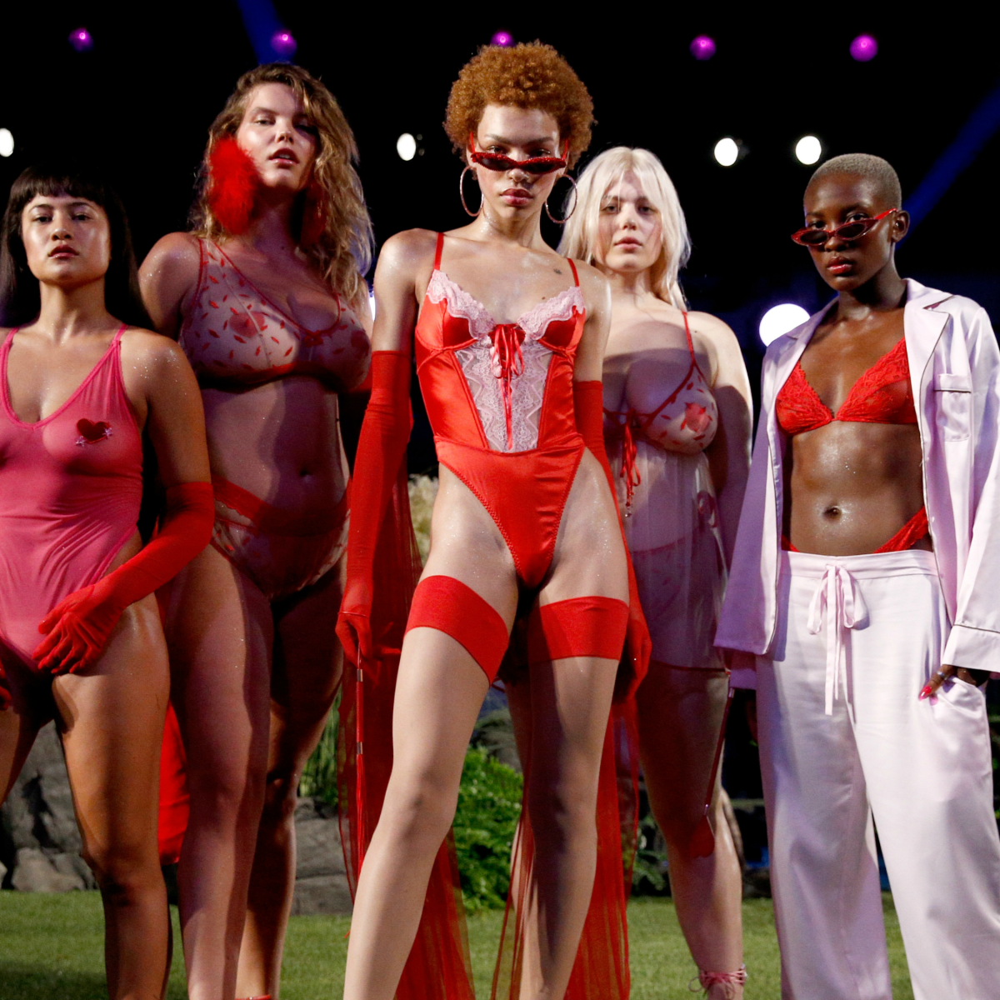

Confidentiality
We don`t always feel 100% secure about every aspect of our body, our intellect, our relationships, etc. With social media we can become obsessive and feel more and more pressured to obtain perfection
. Beauty and the body are the biggest insecurities reported on a daily, especially by women. Social meadia reflects on beauty by being light-skinned and having clear skin, the body by being skinny and having curves, such things result to feeling inadequate and insecure, we end up bleaching ourselves, having plastic surgeries and suffering from working-out very hard and not eating to achieve a certain body type and beauty.
In reality we are not perfect. We have different skin tones, body types, areola sizes, we have dark spot and we also have stretch marks. We all need to embrace our flaws and differences.



Mind
Personally I think clothing helps with boosting ones confidence. Not only does it influence the level of confidence but also signifies how others perceive you. A certain style makes you happy and captures rapid attention. Some people use clothing as a way to hide their insecurities, but i think we should all feel comfortable in our own skin.
I say show the people all your flaws and embrace them, do not hide them, do not feel embarrassed and ashamed of your imperfections. Instead make your insecurities/ imperfections appear sexy and naughty. It is the imperfections in our work that enables it to be great, to allow changes, improvements and growth.

Lingerie
Lingerie is often used to enhance ones assets. It is worn for the feeling of being attractive and someboody`s self-image and love. Lingerie is the best clothing used to embrace ones flaws while looking sexy and projects cheekiness, hotness, confidence and gorgeousness.
BEST FABRICS FOR LINGERIE:
Lucent Satin
Lucent Satin Fabric is a gorgeous, lightweight, shimmering double-faced sateen fabric. this shiny, substantially opaque material is a high luster fabric which is very light and airy, weighing only 3.5oz.

Silk Impression
Silk Impression has a crisp white base while the Silk Sensation has a slightly off white cream tone. The Impression has a shimmer to the fabric surface, giving it an almost glittery appearance and is softer with more drape. Bare in mind it is a very light material so it might need to be accompanied by something else.

Cottan Satin
Cotton Satin is 100% natural, so is incredibly soft to touch. And even though it has a matt fish, the face is smooth and feels a delight against the skin. It drapes elegantly, and would be ideal to make a classy chemise or cute pyjama set. Natural cotton is always a beautiful material to wear, thanks to the breathable properties and cool touch.

Mulmul Soft Muslin
Not every fabric used for underwear needs to be sexy and glam, but the Mulmul Muslin is sultry in it`s own unique way. The sheer-like quality and semi-transparency make it perfect for a barely there chemise or nightdress.It`s incredibly soft, and has an almost brushed surface, making it a delight to wear of an evening.
Jersey
Jersey is a single-knit cotton fabric that`s known for it`s stretch and softness. Because of how jersy is knit, there is a natural elasticity without using stretch fibers like elastane. Because it moves with the body it`s ideal as ordinary comfort lougewear. Jerseys are knitted, providing warmth and a cosy softness.

Princess Lace Satin
Make your own shapely lace bodysuit usinf Princess Lace Satin. Then knitted lace front is backed with an elegant silvery satin, creating drama, texture and sensuality. There`s a slight stretch so it can move with you whilst still keeping the shape and definition.

Organza
Organza is a thin, plain weave, sheer fabric traditionally made from silk. Sheer and transparent with a touch of spatkle. Organza is sheer with an ethereal aesthetic, making it a perfect material for lingerie. Add shaped motifs that subtly catch the light, or a petticoat layeryo your babydoll.

Florence Net
This favricis a printed Power Mesh Fabric, making it extremely breathable and slightly transparent. This finely knittedtulle poly favric has a four way stretch built into it`s construct, making it highly flexible and perfect for lightweight designs.

Influence
Robyn Rihanna Fenty, (born February 20, 1988), Barbadian pop and rhythm-and-blues (R&B) singer who became a worldwide star in the early 21st century, known for her distinctive and versatile voice and for her fashionable appearance.
From 2016 Rihanna started her own businesses and one of them is called Savage X Fenty. Savage X Fenty ia a lingerie brand the emphasizes confidence, inclusivity and fearlessness. And is designed for all genders, sizes and backgrounds. Along with lingerie, the line features bras, underwear, sleepwear, and loungewear. https://www.savagex.com/
Savage X Fenty was founded on the 11th of May 2018.

i love people that are confident and people that want to represent their space in this world,
Rihanna said in an interview. That`s what the show is all about: representation,
Rihanna said in an interview after Savage X Fenty Vol.3. Rihanna also wants men to be able to see themselves in her lingerie collection. Not just the six-pack sporty type, but all shapes, races and sizes. She added that she feels men are often overlooked when it comes to inclusion, and she wamts to change that.

Outside of the Savage X Fenty lingerie line, her empire also includes her skin care line, Fenty Skin, and her make-up line, Fenty Beauty, https://fentybeauty.com/?gclid=CjwKCAjwy7CKBhBMEiwA0Eb7as1mCmNjFfPGX4t2FTUrI0m_Co2v5i40EDXKOdfIEAbRcCVVK3RV9RoC8GUQAvD_BwE.

So stand up! Show the world who you really are, embrace and celebrate every single part of you! Represent your space in this world!